Personas, empresas, productores y Estado eligen entre alternativas.
FCA · UNNE · Clase Inicial
1/1
Economía Política · FCA · UNNE
Clase inicial
Una invitación a mirar la economía como una forma de pensar problemas reales: recursos, decisiones, precios, tecnología, instituciones y sociedad.
DocenteLic. Juan Pablo Ybarra
FechaMartes 2 de junio de 2026
MateriaEconomía Política · Ingeniería Agronómica
01 · Punto de partida
La economía no empieza con números.
Empieza con una pregunta: ¿cómo decidimos cuando los recursos, el tiempo y la información son limitados?
Los precios, reglas y expectativas modifican conductas.
Cada decisión tiene efectos visibles e invisibles.
02 · La cátedra
Equipo docente
La materia combina teoría económica, herramientas de análisis y discusión aplicada al mundo agropecuario.
Juan Pablo YbarraLic. en Economía · Mg. en Finanzas
Jorge EstoupLic. en Economía · Mg. en Economía y Desarrollo
Thea BelausteguiLic. en Administración · Mg. en Empresas Familiares
Mariano TrachtaIng. Agr. · Mg. en Agronegocios y Alimentos · MSc
Ricardo Rey LeyesAyudante alumno
Contactoeconomiapoliticacsagr@gmail.com
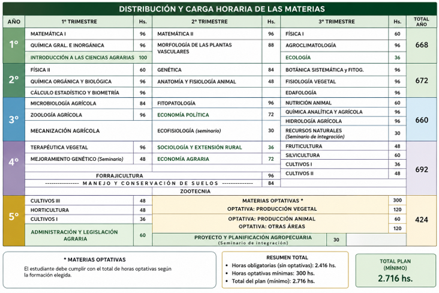
04 · Pregunta disparadora
¿Qué es economía para ustedes?
Asignar recursos para satisfacer necesidades humanas.
La definición es útil. La clase va a complejizarla: recursos renovables y agotables, necesidades presentes y futuras, información incompleta e instituciones.
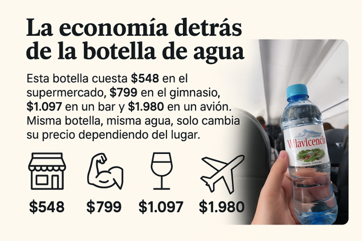
05 · Precio, valor y contexto
La misma botella no siempre ofrece el mismo servicio.
- El producto físico puede ser idéntico.
- La urgencia, el lugar y la disponibilidad cambian la valoración.
- El precio expresa información, escasez relativa y poder de mercado.
Actividad breve
Antes de discutir, separar tres planos
La botella es la misma. Lo que cambia es el contexto económico en el que se consume.
06 · Concepto clave
Precio, valor y costo no son sinónimos.
Lo que efectivamente se paga por acceder al bien o servicio.
Lo que el consumidor está dispuesto a pagar por los beneficios percibidos.
Recursos utilizados para producir, distribuir o prestar el servicio.
La diferencia entre estos tres conceptos explica muchas discusiones de mercado.
07 · Regulación y escasez
Cuando el precio queda por debajo del equilibrio, aparece una señal.
La góndola vacía también comunica: hay demanda insatisfecha, problemas de reposición o restricciones para vender al precio vigente.
precio máximofaltantescolasracionamiento
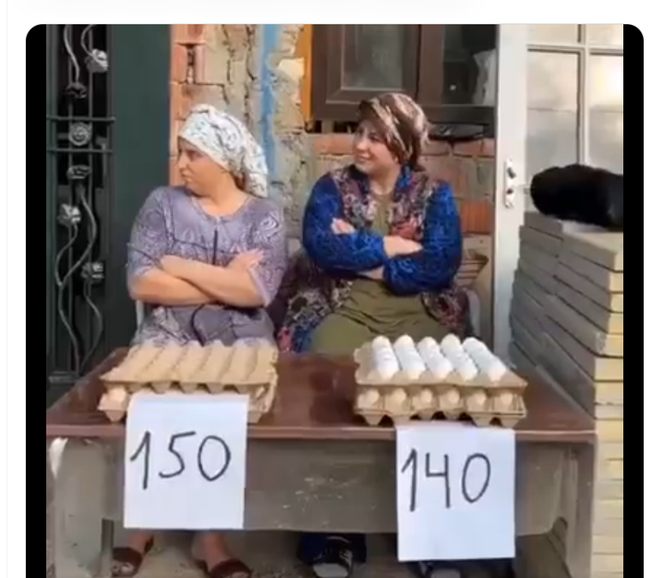
08 · Competencia cotidiana
Precio reactivo a la competencia vs precio reactivo al mercado.
Un vendedor mira al lado. Una empresa mira al consumidor, los costos, la logística, las reglas, la inflación esperada y la disponibilidad futura.
Corto plazoreacción rápida
Mediano plazoestrategia y reposición
Largo plazoinversión y escala
09 · Objetivo pedagógico
Menos opinión automática. Más método.
La cátedra busca reemplazar la “charla de café” por preguntas verificables, argumentos claros y uso responsable de datos.
Bloque administrativo
Reglas de juego
Organización, condiciones de cursado, evaluación y calendario.
10 · Sistema de aprobación
Las reglas tienen que estar claras desde el inicio.
Dos parciales aprobados con mínimo 7 y asistencia del 75%.
Dos parciales aprobados con mínimo 6, opción a un recuperatorio y asistencia del 75%.
Cuando no se cumplen las condiciones anteriores.
11 · Cronograma operativo
Dos bloques para ordenar el aprendizaje
Principios + Microeconomía · Unidades 1 a 5 · teoría, práctica, charlas y primer parcial.
Macroeconomía · Unidades 6 a 10 · teoría, práctica, charla, segundo parcial y recuperatorio.
12 · Ritmo semanal
Presencialidad, práctica y aula virtual
La materia combina clases presenciales, materiales asincrónicos y uso del aula virtual como repositorio de trabajo.
Martes 16:30–17:45Teoría · primera parte
Martes 18:00–19:30Práctico · traer calculadora
Viernes 18:00–19:30Teoría · Mecanización / campito
Aula virtualPPT, guías de TP y resoluciones
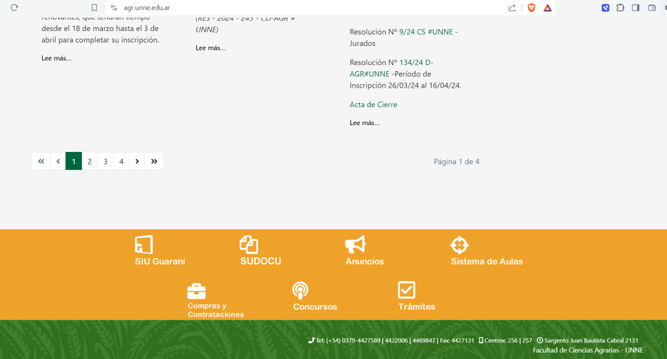
14 · Cómo estudiar
La bibliografía no es solo “leer apuntes”.
Ordenan conceptos y prioridades.
Convierte la clase en aprendizaje propio.
Trae la economía al mundo real.
15 · Actualidad económica
La economía se aprende leyendo el presente.
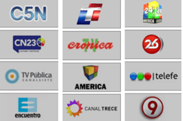
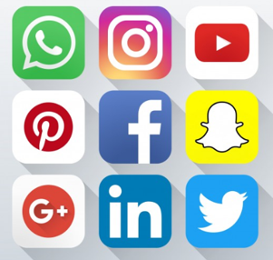
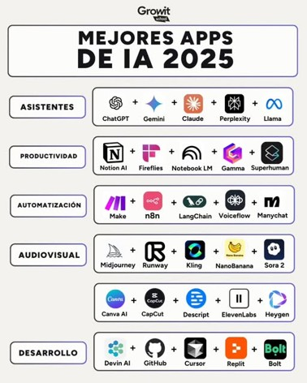
16 · Herramientas digitales
La IA puede ayudar a estudiar, no reemplaza el criterio.
- Sirve para explicar, resumir, preguntar y practicar.
- Debe verificarse con fuentes y clase.
- El objetivo es mejorar el razonamiento, no copiar respuestas.
Bloque conceptual
¿Qué vamos a ver en Economía Política?
Una caja de herramientas para analizar decisiones económicas en sistemas agropecuarios y sociales.
17 · Puente disciplinar
Agronomía y economía se cruzan en la decisión productiva.
Generación sustentable de alimentos, manejo de recursos, tecnología y productividad.
Modelización de fenómenos con impacto social: personas, mercados, incentivos e instituciones.
18 · Diferencia fundamental
Economía Política no es lo mismo que Política Económica.
Estudia teorías, pensamientos, modelos y relaciones entre producción, intercambio y distribución.
Aplica instrumentos para modificar comportamientos: política fiscal, monetaria, cambiaria, comercial y regulatoria.
19 · Definición base
Economía como ciencia social
Estudia la extracción, producción, intercambio, distribución y consumo de bienes y servicios, y la forma de satisfacer necesidades humanas múltiples mediante recursos limitados.
La pregunta actual es cómo incorporar ambiente, tecnología, futuro, desigualdad e instituciones dentro de esa definición.
20 · Modelo mental de la materia
Decisión económica = contexto + incentivos + restricciones + expectativas.
RecursosPreciosCostosMercadosEstadoTecnologíaAmbienteFuturo
21 · Escasez y población
Thomas Malthus: el problema de los límites.
Su preocupación central fue la tensión entre crecimiento poblacional y recursos disponibles. La idea de rendimientos decrecientes marcó una forma de pensar la escasez.
Economista inglés · 1766–1834
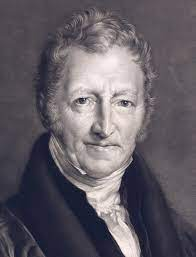
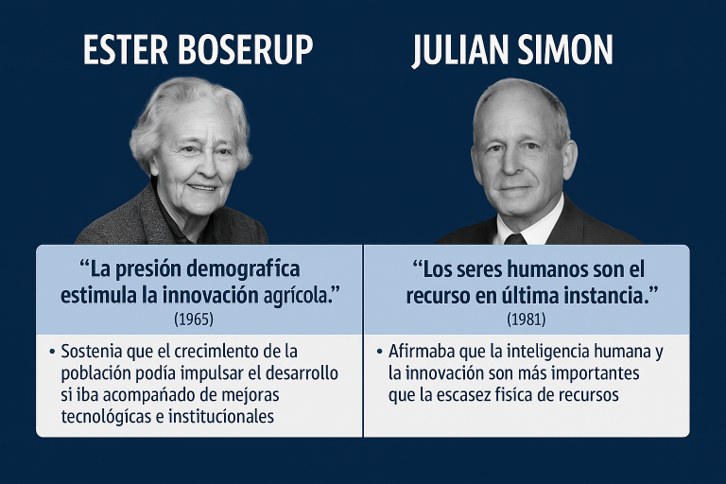
22 · Respuesta tecnológica
La presión demográfica también puede impulsar innovación.
Boserup y Simon ayudan a discutir una idea clave: los límites existen, aunque las capacidades humanas, institucionales y tecnológicas pueden cambiarlos.
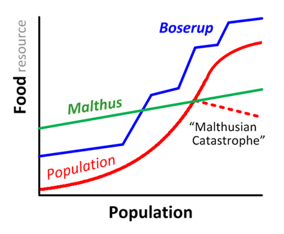
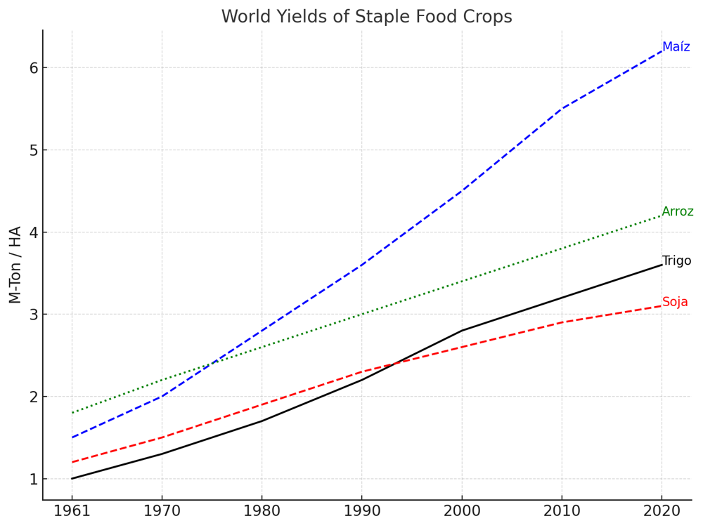
24 · Evidencia productiva
La productividad agrícola cambió la frontera de posibilidades.
Maíz, trigo, arroz y soja muestran aumentos de rendimiento que permiten discutir tecnología, escala, conocimiento y límites ambientales.
25 · Definición actualizada
La economía actual mira bienes, servicios, necesidades y futuro.
Renovables y agotables.
Materiales, digitales y ecosistémicos.
Presentes y futuras.
Escasez, ambiente e instituciones.
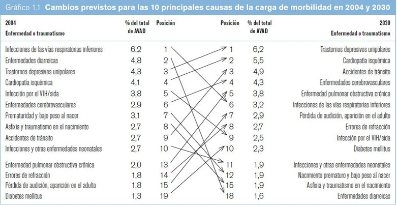
Bloque metodológico
Pensar con método
Separar hechos, juicios, hipótesis, datos y propuestas.
27 · Causa y efecto
Economía positiva y economía normativa
Describe lo que es o lo que se espera que ocurra. Puede contrastarse con datos y evidencia.
Plantea lo que debería hacerse. Depende de valores, prioridades y criterios de justicia.
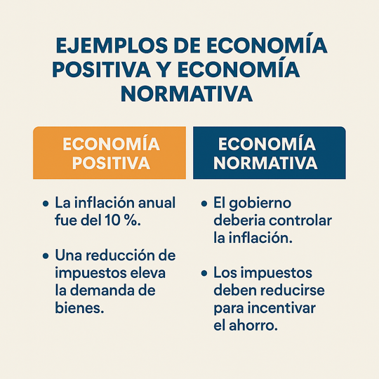
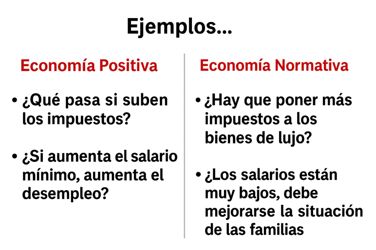
Actividad breve
Clasificar antes de opinar
01 “Si aumenta el salario mínimo, aumenta el desempleo”.
02 “Los salarios están bajos y deberían mejorar”.
03 “Una reducción de impuestos eleva la demanda de bienes”.
04 “El gobierno debería controlar la inflación”.
Primero identificar si es positiva o normativa. Después discutir evidencia, supuestos y objetivos.
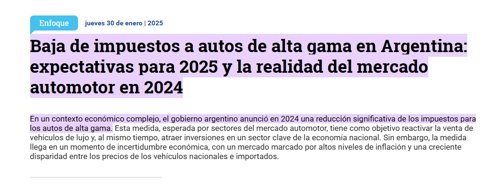
28 · Caso aplicado
Una noticia puede leerse en varias capas.
- Impacto en precios y demanda.
- Recaudación y política fiscal.
- Distribución del beneficio.
- Señales al sector productivo.
29 · Método de discusión en clase
Para cada caso vamos a usar cuatro preguntas
30 · Expectativas
La materia se aprueba estudiando y se aprovecha participando.
La duda ordena el aprendizaje.
La economía se entiende haciendo.
Los conceptos aparecen todos los días.
Economía Política · Clase inicial
Las preguntas mejoran. CONSULTEN!!. HABLEN!!.
Próximo paso: pasar de la intuición a los conceptos básicos de economía, mercados, precios e incentivos.